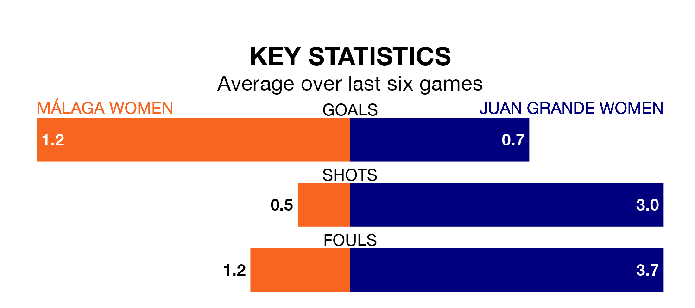

Málaga Women face Juan Grande Women on Sunday seeking to protect their long unbeaten run in the Segunda Federación Femenina.
Málaga are unbeaten in five, with two wins and three draws, ahead of the 11am kick-off.
They face a Juan Grande team who have won one and drawn three over the same number of games.
Málaga are 14th in the table after 25 games, of which they have won nine and drawn eight, earning 35 points.
Juan Grande are five places ahead of the hosts in ninth, with 11 wins and eight draws putting them on 41 points.
With 37 goals in 25 games so far this season, Málaga are scoring more than average in the league with 1.5 goals per game. But they are conceding more than average too, letting in 35 goals at a rate of 1.4 per game.
The away team, meanwhile, are average scorers, with 1.3 goals per game. They have conceded 0.8 goals per game.
Málaga's last match was on March 23, a 3-3 draw against Fundación Tenerife Women, with getting the goals for Málaga.
Juan Grande drew 0-0 with Valencia II Women last time out, on March 24.
Updated: 12:39 (UTC), 26/03/24